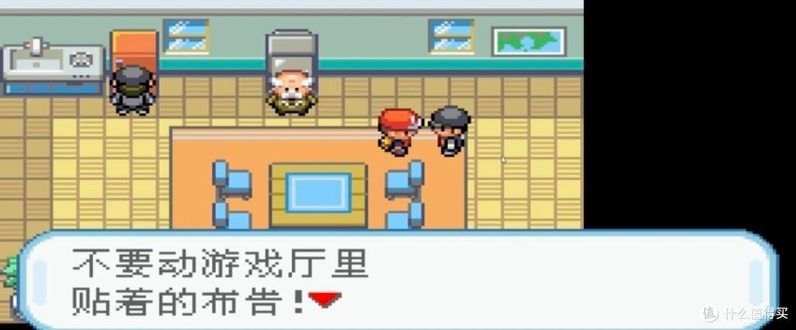

任天堂 Game Boy（初代 · 国内上市价口径）

8 位掌机鼻祖，四节电池续航数十小时，奠定掌上游戏格局。
客观评测
Game Boy 搭载 Sharp LR35902 处理器（约 4.19MHz）、8KB 主内存、8KB 显存与 2.6 英寸 160×144 单色屏，以今天的标准看十分寒酸。但它把主机级玩法塞进 220 克机身，四节五号电池实测可玩 15-30 小时，远超同期彩屏竞品。卡带最大 32Mb，后期《宝可梦 金/银》以内置时钟和双地图逼近容量极限。低功耗、长续航、耐磕碰，是参数平庸却工程平衡的典范。
主观点评
插上卡带、拨动电源开关的那声轻响，是无数人游戏记忆的起点。它陪我们度过停电的夏夜和漫长的车厢旅途，《俄罗斯方块》的下落音效至今仍在耳边。机身厚实、按键清脆，摔落磕碰也毫发无伤。Game Boy 不追求画面华丽，而是把“随时随地玩一把”变成生活方式，也让宝可梦成为全球文化现象。三十年后再开机，那块泛绿的单色屏依然能让人会心一笑。
优点与不足
- 续航怪兽，四节五号电池可连玩数十小时
- 《俄罗斯方块》《宝可梦》等神作撑起庞大阵容
- 机身坚固耐造，方正造型是一代人的童年记忆
- 单色屏无背光，暗光环境下几乎没法玩
- 机能有限，画面与音效远逊同期家用机
参数规格
| 屏幕 | 2.6 英寸单色 STN 液晶屏，160×144，四级灰度 |
|---|---|
| 处理器 | Sharp LR35902（Z80 衍生），约 4.19MHz |
| 内存 | 8KB 主内存 + 8KB 显存 |
| 存储介质 | ROM 卡带，最大支持 32Mb |
| 手柄 | 十字键 + A/B 键 + Start/Select，机身一体式 |
| 网络 | 无联网，支持 Link Cable 线缆对战 |
| 音频 | 双声道矩形波 + 噪声通道，内置单声道喇叭 |
| 供电 | 4 节 AA 电池，实测续航约 15-30 小时 |
| 尺寸重量 | 90×148×32mm，约 220g（含电池） |
| 首发大作 | 《俄罗斯方块》《超级马力欧大陆》 |